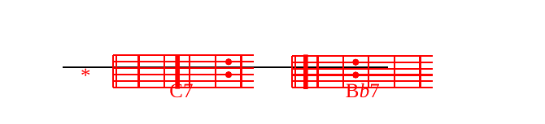

M.+K.D-Stabat Mater dolorosa
C7 *juxta crucem lacriBb7 *mosa
dum pendebat A7filius.
M.D-Roho yake iliyolia
C7 *yenye huzuni na kuuBb7 *mia
upanga uliiA7choma.
M.+K.Stabat Mater...
M.Lo, jinsi mwenye huzuni na mateso
alivyokuwa yule mbarikiwa
mama wa mwana wa pekee!
M.+K.Stabat Mater...
M.Nani mtu asiyelia machozi
amwonapo mama wa Kristo
kwenye mateso mengi hivi!
M.+K.Stabat Mater...
M.Kwa dhambi za watu wake
amwona Yesu kwenye mateso
na akipigwa mijeledi!
M.+K.Stabat Mater...
M.Amwona mzaliwa wake mpendwa
akifa, na upweke,
atoaye Roho yake!
M.+K.Stabat Mater...
M.Ee Kristo, itakaponibidi kufa,
kwa mamako mbarikiwa unifikishe
kwenye mtende wa ushindi!
AmD-en, aBb7men, aA7men!
M.+K.AmD-en, aBb7men, aA7men!
